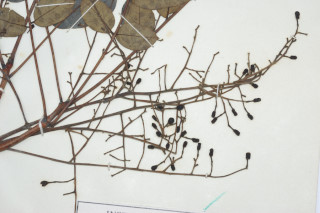
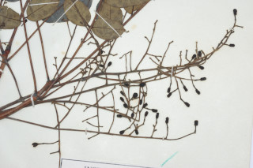
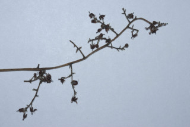
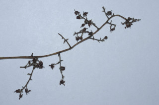

Small deciduous trees, up to 10 m tall.
ಸಣ್ಣದಾದ ಎಲೆಯುದುರುವ, 10 ಮೀ ಎತ್ತರದವರೆಗೂ ಬೆಳೆಯುವ ಮರಗಳು.
10 മീറ്റര് ഉയരത്തില് വളരുന്ന, ഇലപൊഴിക്കുന്ന ചെറുമരം.
சிறிய இலையுதிர் மரங்கள், 10 மீ. உயரம் வரை வளரக்கூடியது.
Bark smooth, greyish green
ತೊಗಟೆಯ ಮೇಲ್ಮೈ ನಯವಾಗಿದ್ದು ಬೂದು ಮಿಶ್ರಿತ ಹಸಿರು ಬಣ್ಣದಲ್ಲಿರುತ್ತದೆ.
ചാരകലര്ന്ന പച്ചനിറത്തിലുള്ള മിനുസമാര്ന്ന പുറംതൊലി.
மரத்தின் பட்டை வழுவழுப்பானது, சாம்பல் கலந்த பச்சை நிறம்.
Branchlets with corky bark, glabrous.
ಕಿರುಕೊಂಬೆಗಳು ಬೆಂಡು ರೂಪದ ತೊಗಟೆ ಹೊಂದಿದ್ದು ರೋಮರಹಿತವಾಗಿರುತ್ತದೆ.
കോര്ക്കുപോലുള്ള പുറംതൊലിയോടുകൂടിയ, അരോമിലമായ, ഉപശാഖകള്.
பக்ககிளைகளின் பட்டை கார்க் போன்று பொரிந்து காணப்படும், உரோமங்களற்றது.
Leaves compound, imparipinnate, clustered at twig ends; rachis 15-30 cm long, terete, striate, pulvinus, glabrous; leaflets opposite, 3-7 pairs with terminal one, petiolule to 0.2 cm long; leaflet lamina 3-8 x 1.4-3 cm, narrow oblong sometimes oblong-ovate, apex acuminate, base asymmetricaly rounded, margin crenulate with shallow crenature, chartaceous, glabrous; midrib slightly raised above, with intramarginal_nerve; secondary_nerves 8-10; tertiary_nerves admedially_ramified.
ಎಲೆಗಳು ಅಸಮ ಸಂಖ್ಯಾ ಗರಿರೂಪ ಸಂಯುಕ್ತ ಮಾದರಿಯಲ್ಲಿದ್ದು ಕುಡಿಕೊಂಬೆಗಳ ತುದಿಗಳಲ್ಲಿ ಗುಂಪಾಗಿರುತ್ತವೆ. ಸಂಯುಕ್ತ ಎಲೆಗಳ ಅಕ್ಷದಿಂಡು 15 ರಿಂದ 30ಸೆಂ.ಮೀ. ಉದ್ದವಿದ್ದು, ಉಬ್ಬು ಸಾಲಿನ ಗುರುತುಗಳನ್ನು ಹೊಂದಿರುತ್ತವೆ. ಅಕ್ಷಾದಿಂಡಿನ ಬುಡ ಉಬ್ಬಿರುತ್ತದೆ ಮತ್ತು ರೋಮರಹಿತವಾಗಿರುತ್ತದೆ. ಕಿರುಎಲೆಗಳು ಅಭಿಮುಖಿಗಳಾಗಿದ್ದು, 3 ರಿಂದ 7 ಜೋಡಿಗಳಿದ್ದು, ಒಂದು ಕಿರು ಎಲೆ ಅಗ್ರಸ್ಥಾನದಲ್ಲಿರುತ್ತದೆ. ಕಿರು ಎಲೆಗಳ ತೊಟ್ಟು 0.2 ಸೆಂ.ಮೀ. ವರೆಗಿನವರೆಗೂ ಉದ್ದವಿದ್ದು ಕಿರುಎಲೆಗಳ ಪತ್ರ 3 - 8 × 1.4 - 3ಸೆಂ.ಮೀ. ಗಾತ್ರದಲ್ಲಿರುತ್ತದೆ; ಕಿರುಎಲೆಗಳ ಪತ್ರಗಳು ಇಕ್ಕಟ್ಟಾದ ಚತುರಸ್ರಾಕಾರದಲ್ಲಿ ಕೆಲವೊಮ್ಮೆ ಅಂಡ-ಚತುರಸ್ರಾಕಾರ ಹೊಂದಿದ್ದು, ಕ್ರಮೇಣ ಚೂಪಾಗುವ ತುದಿ, ಅಸಮರೂಪಿ ಗುಂಡಾಕಾರದ ಬುಡ, ಆಳವಿಲ್ಲದ ಸೂಕ್ಷ್ಮಾದಂತಾಕೃತಿ ಅಂಚು, ತೊಗಲಿನಂತಹ ಮೇಲ್ಮೈ ಹೊಂದಿದ್ದು ರೋಮರಹಿತವಾಗಿರುತ್ತವೆ. ಮಧ್ಯನಾಳ ಪತ್ರಗಳ ಮೇಲ್ಭಾಗದಲ್ಲಿ ಉಬ್ಬಿರುತ್ತದಲ್ಲದೆ ಅಂತರ-ಅಂಚಿನ ನಾಳಗಳ ಸಮೇತವಾಗಿರುತ್ತದೆ. ಎರಡನೇ ದರ್ಜೆಯ ನಾಳಗಳು 8 ರಿಂದ 10 ಇದ್ದು, ತೃತೀಯ ದರ್ಜೆಯ ನಾಳಗಳು ಎಲೆಯ ಅಕ್ಷದ ದಿಕ್ಕಿಗಿರುತ್ತದೆ.
അസമപിച്ഛക ബഹുപത്രങ്ങള് കമ്പുകളുടെ അറ്റത്ത് കൂട്ടമായി ക്രമീകരിച്ചിരിക്കുന്നു; മുഖ്യാക്ഷം 15 മുതല് 30 സെ. മി. വരെ നീളമുള്ളതും, ഉരുണ്ടതും, വരകളുള്ളതും, കീഴറ്റം വീര്ത്തതും അരോമിലവുമാണ്. അറ്റത്തുളളത് ഒറ്റയായ, 3 മുതല് 7 ജോഡികള് പത്രകങ്ങള് സമ്മുഖമായി ക്രമീകരിച്ചിരിക്കുന്നു, പത്രകവൃന്തത്തിന് 0.2 സെ. മി. നീളം പത്രകഫലകത്തിന് 3 മുതല് 8 സെ. മി വീതിയും, വീതികുറഞ്ഞ ആയതാകാരമോ ചിലപ്പോള് ആയത-അണ്ഢാകാരമോ ആണ്, ദീര്ഘാഗ്രവും, ആധാരം അസമ വൃത്താകാരവുമാണ്, അരികുകള് ലഘുവായി ദന്തരമാണ്, ആരോമിലം, മുഖ്യ സിര മുകള് ഭാഗത്ത് അന്തര് സീമാന്ത സിരകള്ക്കൊപ്പം ചെറുതായി ഉയര്ന്നു നില്ക്കുന്നു; 8 മുതല് 10 ജോഡി ദ്വിതീയ ഞരമ്പുകള് ത്രിതീയ ഞരമ്പുകള്.
கூட்டிலைகள்; ஒற்றைபடை சிறகுவடிவக்கூட்டிலைகள் (இம்பேரிபின்னேட்), நுனிக்கிளையில் இலைகள் கூட்டமாக மற்றும் நெருக்கமாகமைந்தவை; மத்தியகாம்பு (ராக்கிஸ்) 15-30 செ.மீ., நீளமானது, குறுக்குவெட்டுத் தோற்றத்தில் வட்டவடிவானது, வரித்தழும்புகளுடையது, பல்வினேட், உரோமங்களற்றது; சிற்றிலைகள் எதிரடுக்கமானது, 3-7 ஜோடிகள் மற்றும் நுனியில் ஒரு சிற்றிலை மட்டும் இருக்கும், சிற்றிலைக்காம்பு 0.2 செ.மீ. நீளமானது; சிற்றிலை அலகு 3-8 X 1.4-3 செ.மீ., குறுகிய நீள்சதுர சிற்றிலை மற்றும் சிலவற்றில் நீள்சதுரம்-முட்டை வடிவம்;அலகின் நுனி அதிக்கூரியது, அலகின் தளம் சமமற்றது, அலகின் விளிம்பு ஆழமற்ற பிறை பற்களுடையது சார்ட்டேசியஸ், கீழ்பரப்பு உரோமங்களற்றது; மையநரம்பு சிறிது இலையின் பரப்பைவிட உயர்ந்தது மற்றும் விளிம்பு நரம்புடையது (இண்ட்ராமார்ஜினல் நரம்பு); இரண்டாம் நிலை நரம்பு 8-10 ஜோடிகள்; மூன்றாம் நிலை நரம்புகள் மையநரம்பை நோக்கி படர்ந்திருக்கும் (அட்மீடியல்லி ராமிபைடு).
Inflorescence terminal panicle; flowers bisexual, white, fragrant.
ಹೂಗಳು ಸುವಾಸನಾಯುಕ್ತ, ದ್ವಿಲಿಂಗಿ ಹಾಗೂ ಬಿಳಿ ಬಣ್ಣದಾಗಿದ್ದು ತುದಿಯಲ್ಲಿರುವ ಪುನರಾವೃತ್ತಿಯಾಗಿ ಕವಲೊಡೆಯುವ ಪುಷ್ಪಮಂಜರಿಯಲ್ಲಿರುತ್ತವೆ.
പൂങ്കുലകള് ഉച്ഛസ്ഥ പാനിക്കിളാണ്; വെളുത്തതും സുഗന്ധമുള്ളതുമായ പൂക്കള് ദ്വിലിംഗികളാണ്.
மஞ்சரி தண்டின் நுனியில் அமைந்த பேனிக்கிள்; மலர்கள் இருபாலானவை, வெள்ளை நிறம், நறுமணமுடையது.
Drupe, small, oblong, 0.8 x 0.4 cm, 1-seeded.
ಕಾಯಿಗಳು ಡ್ರೂಪ್ ಮಾದರಿಯವು, 0.8 × 0.4 ಸೆಂ.ಮೀ. ಅಳತೆಯ ಸಣ್ಣ ಗಾತ್ರದವು ಹಾಗೂ ಒಂದು ಬೀಜವನ್ನೊಳಗೊಂಡಿದ್ದು ದೀರ್ಘ ಚತುರಸ್ರಾಕಾರದಲ್ಲಿರುತ್ತವೆ.
കായ ഒറ്റ വിത്തുള്ളതും 0.8 സെ. മി. നീളവും 0.4 സെ. മി. വീതിയുള്ള ആയതാകാരത്തിലുള്ള ചെറിയ അഭ്രകങ്ങളാണ്.
உள்ளோட்டுத்தசைகனி (ட்ரூப்), நீள்சதுரம், 0.8-0.4 செ.மீ., ஒரு விதை கொண்டது.

 


 
